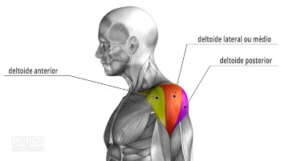
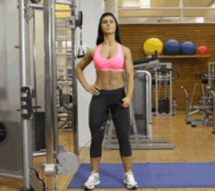

Ombro 12 séries (12-10-8)
Este músculo é composto por deltóide anterior, deltóide lateral ou médio e deltóide posterior

DESENVOLVIMENTO COM BARRA NO BANCO
Um dos melhores exercícios para deltóides, também recrutando de forma significativa o tríceps e parte das costas

ELEVAÇÃO LATERAL COM HALTERES NO BANCO
A elevação lateral com halteres trabalha diferentes tipos de músculos simultaneamente como: deltóide anterior, o deltóide posterior, o deltóide medial e o trapézio músculo infraespinhal.

ELEVAÇÃO FRONTAL COM HALTERES PEGADA NEUTRA
Os principais músculos recrutados na elevação frontal com halteres são: deltoide anterior (frontal) deltoide medial (lateral) serrátil (estabilizador) peitoral superior (estabilizador)

CRUSSIFIXO INVERTIDO NO VOADOR
Este exercício trabalha os deltóides, principalmente o feixe posterior. Deve ser observado que, no final do movimento, no momento da aproximação das escapulas, são solicitados o trapézio (porções média e inferior) e o rombóide.
ELEVAÇÃO LATERAL NO CABO
Na elevação lateral com cabo (polia baixa) o músculo mais ativado é a porção lateral do deltoide, fazendo um movimento de abdução do ombro